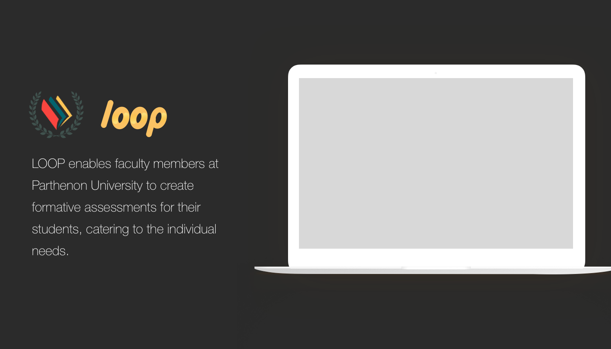
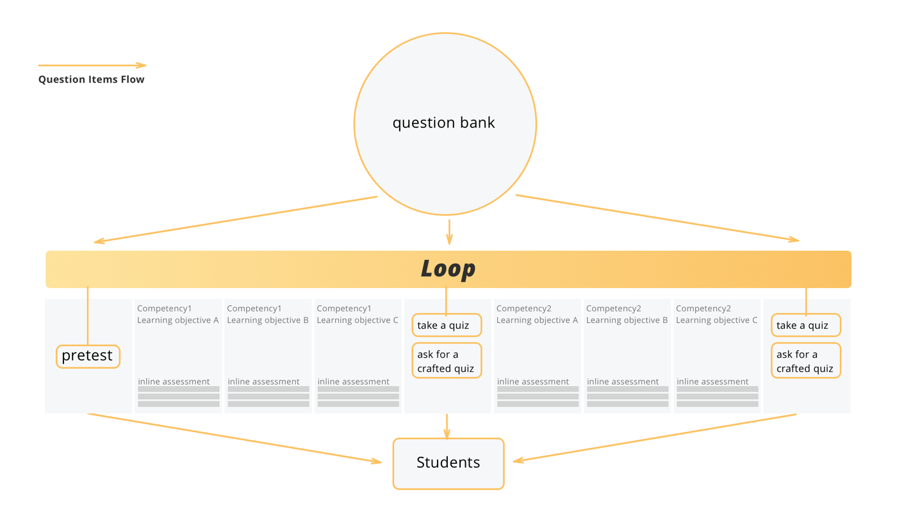
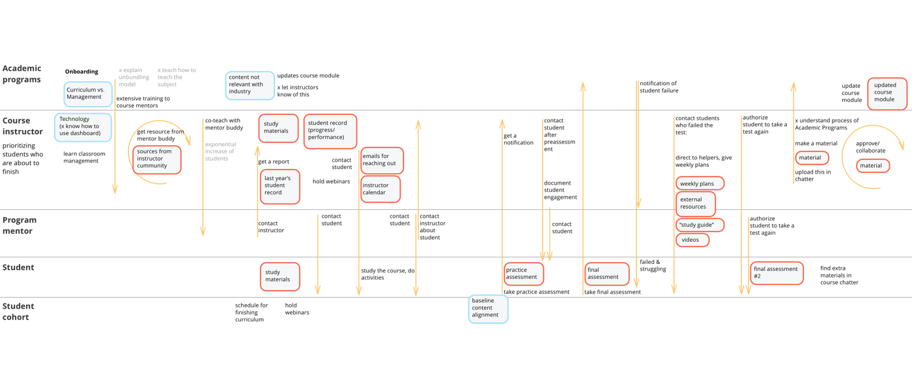
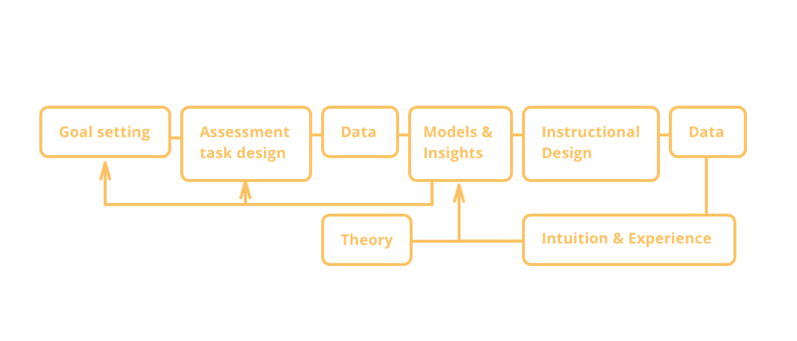
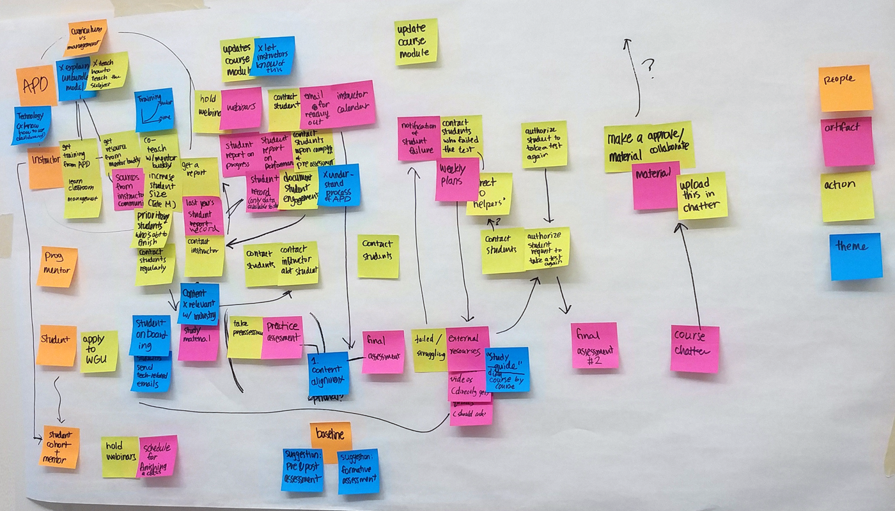
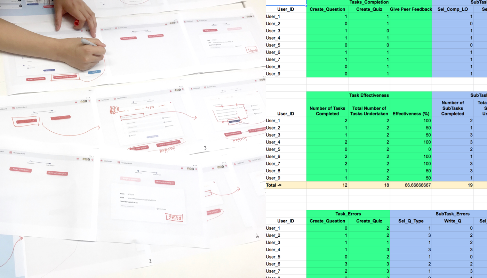

LOOP is a web application that lets the faculty members to create and share formative assessments with their students.
The project is under NDA and has modified information.
About the project Duration: 8 months Team size: 5 Reaches:~300 when realised
Click the image to visit the website for LOOP.
As a designer of the team, I led design research and ideation processes. After we drew insights from cognitive task analysis and user interviews, we made them into features in our product.

Process
Disaggregated educational model vs. traditional academia
Parthenon University (PU) is one of the most successful online higher education institute in the United States. Founded in 1999 with only 400 students, it now has more than 90,000 incoming students every year seeking a bachelor's or master's degree. It has a unique education model - whenever the students are ready to take a qualification test, they could at any time of the semester. Since the school system is competency-based (as opposed to traditional semester-based), the students can learn and earn their degrees at their desired pace.
To accommodate to such student needs and better adapt to the business model of the education industry, PU takes a disaggregated educational model, where there is a division of labor for the education provided to the students. There are departments in charge of exam questions, others in charge of textbook materials, and there are also consultants for student life and time management. Last but not least, there are instructors, who are in charge of the "teaching" part of the university.

This is how LOOP helps.
We were commissioned to address the current problem with the exponential growth in instructors within PU, how they feel about the other departments, and how to best support them to do their job. Our team first started with the preliminary research, which included instructor and related personnel interviews. Soon, we were able to map out the journey of a single instructor from his/her point of view.

Service flow diagram, when an instructor joins the team and meets/interacts with a new student.
The root cause of the symptoms
From the instructor's point of view, we caught some pain points, where we could leverage to make the biggest impact. We didn't stop there, though. The root cause of the pain points was hidden behind the rules and regulations of the university. No one wanted to admit that they are violating their rules (instructor doesn't step on curricula creator's toes, vice versa) but the bits shown through the interviews. We decided to push further on the interviews and found the root cause. Instructors are (mostly) new to the PU's disaggregated model, therefore carry their own roles from traditional academia, which is playing god in the whole process of education.

Backward diagram of the educational process. Note that the instructors in the disaggregated model are not in charge of any of the processes in here.
To better support the suffering instructors, we made a question creation tool that caters to both the instructors' and curriculum managers' needs. While it creates formative assessment items that are scientifically proven to increase the learning of students, it also assures the question quality by three rounds of checking-in. Unlike other applications in the market, LOOP gives multiple brakes to pull on when the question is not appropriate. Furthermore, it makes the sharing and managing formative assessment easier for the instructors, which greatly saves their time and others who try to measure the effectiveness of the questions.


Ideating, iterating our prototype.
Final Thoughts
It was a great experience working with people of diverse background and thoughts. We were able to hand off a publishing flow of the formative assessments through reports, data, prototype, and code. A lot of these would have been impossible without my team members and synergy we had!